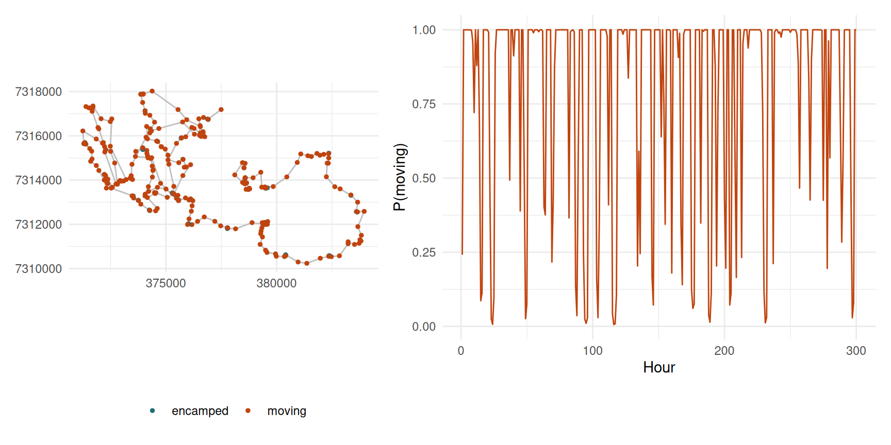
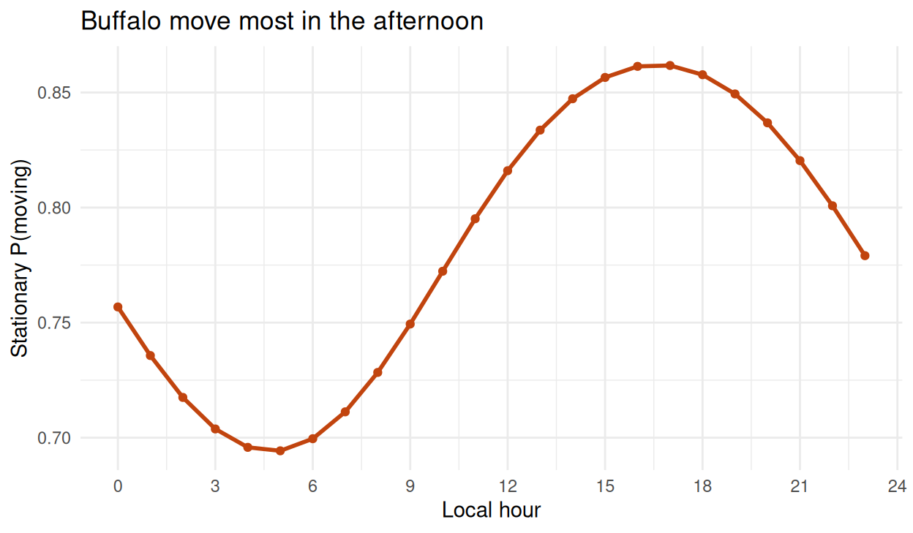
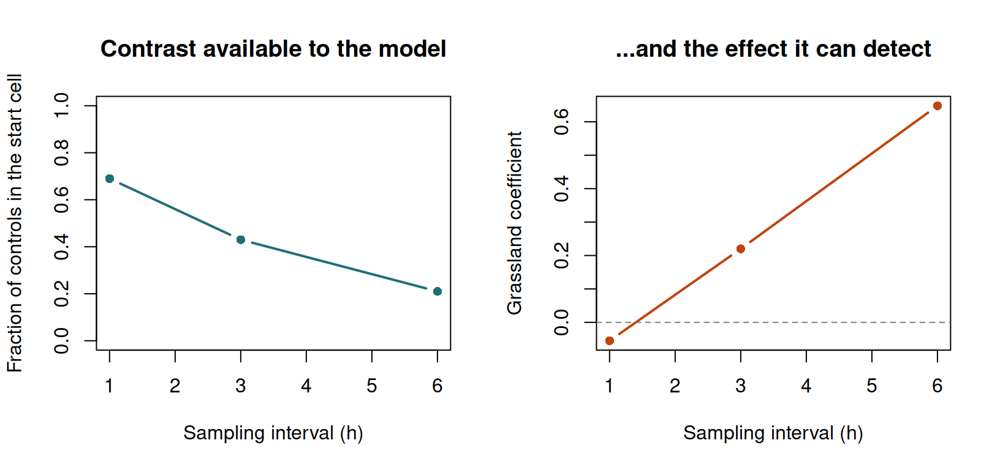

Practical 8 — Hidden Markov models
Session 8 · Behavioural states and synthesis
Goals. Prepare a track for momentuHMM; fit a 2-state model and read it properly; decode and map the states; let time of day drive the switching; compare 2 and 3 states; check pseudo-residuals. Then prepare your mini-project pitch.
Time: ~50 minutes, then ~20 minutes of pitches. Packages: momentuHMM, amt, dplyr, tidyr, lubridate, ggplot2.
Task 1 — Prepare the data
An HMM needs regular time steps and contiguous sequences. The hourly bursts from Session 3 are exactly that; each burst becomes one sequence (ID). We keep the local hour as a covariate for Task 4.
buffalo <- read.csv("data/buffalo_kruger.csv.gz") |>
transmute(id = individual.local.identifier, t = as.POSIXct(timestamp, tz = "UTC"),
x = location.long, y = location.lat) |>
filter(!is.na(x), !is.na(y)) |>
distinct(id, t, .keep_all = TRUE)
hourly <- make_track(buffalo, x, y, t, id = id, crs = 4326) |>
transform_coords(crs_to = 32736) |>
filter(id %in% c("Cilla", "Toni")) |>
nest(data = -id) |>
mutate(data = lapply(data, \(d) d |>
track_resample(rate = hours(1), tolerance = minutes(10)) |>
filter_min_n_burst(min_n = 3))) |>
unnest(cols = data)
hmm_in <- hourly |>
transmute(ID = paste(id, burst_, sep = "_"), x = x_, y = y_,
hour = as.numeric(format(t_, "%H", tz = "Africa/Johannesburg"))) |>
as.data.frame()
prep <- prepData(hmm_in, type = "UTM", coordNames = c("x", "y"), covNames = "hour")
summary(prep$step)
#> Min. 1st Qu. Median Mean 3rd Qu. Max. NAs
#> 0.00 39.25 163.72 290.19 381.02 63102.52 28Zero step lengths. A gamma density is zero at zero, so exact zeros break the likelihood. momentuHMM handles them with a zero-mass parameter per state — but only if you give it starting values for it.
Outlier steps. The 63 km spike from Session 3 is still here. An HMM will happily invent a “teleporting” state for it. Drop the affected bursts.
Task 2 — A 2-state model
m2 <- fitHMM(prep, nbStates = 2,
dist = list(step = "gamma", angle = "vm"),
Par0 = list(step = c(20, 400, # means: state 1, state 2
20, 400, # sds
0.01, 0.001), # zero-masses
angle = c(0.5, 2))) # von Mises concentrations
m2
#> Value of the maximum log-likelihood: -76004.51
#>
#>
#> step parameters:
#> ----------------
#> state 1 state 2
#> mean 16.413393599 3.505018e+02
#> sd 14.055703713 3.253746e+02
#> zeromass 0.004417284 1.484086e-09
#>
#> angle parameters:
#> -----------------
#> state 1 state 2
#> mean 0.000000e+00 0.0000000
#> concentration 3.223576e-17 0.7562868
#>
#> Regression coeffs for the transition probabilities:
#> ---------------------------------------------------
#> 1 -> 2 2 -> 1
#> (Intercept) -0.186795 -1.914822
#>
#> Transition probability matrix:
#> ------------------------------
#> state 1 state 2
#> state 1 0.5465634 0.4534366
#> state 2 0.1284401 0.8715599
#>
#> Initial distribution:
#> ---------------------
#> state 1 state 2
#> 0.229308 0.770692Par0 are initial guesses for the optimiser, grouped by parameter, then by state: both means, then both sds, then both zero-masses. The likelihood of an HMM has several peaks, so bad starting values can land you on the wrong one. For a real analysis, refit from many random starts (retryFits in fitHMM()) and keep the best.
Your turn
2a. Describe the two states. 2b. What is the expected dwell time in each?
round(m2$mle$step, 2)
#> state 1 state 2
#> mean 16.41 350.50
#> sd 14.06 325.37
#> zeromass 0.00 0.00
round(m2$mle$angle, 3)
#> state 1 state 2
#> mean 0 0.000
#> concentration 0 0.756
gam <- m2$mle$gamma
round(gam, 3)
#> state 1 state 2
#> state 1 0.547 0.453
#> state 2 0.128 0.872
round(1 / (1 - diag(gam)), 1) # expected consecutive hours in each state
#> state 1 state 2
#> 2.2 7.8State 1: steps of a few tens of metres and turning angles close to uniform — the animal barely moves and its direction is noise. An encamped state.
State 2: steps of several hundred metres with some directional persistence — moving.
Expected dwell times: about 2 hours encamped and about 8 hours moving, in units of the sampling interval (here, hours).
The labels are interpretations: “encamped” is consistent with resting, ruminating, or foraging in one spot. Only an independent sensor or direct observation could tell those apart.
Task 3 — Decode and map
prep$state <- factor(viterbi(m2), labels = c("encamped", "moving"))
prep$p_moving <- stateProbs(m2)[, 2]
one <- prep[prep$ID == names(sort(table(prep$ID), decreasing = TRUE))[1], ]
one <- one[1:300, ]
p1 <- ggplot(one, aes(x, y)) +
geom_path(colour = "grey75") +
geom_point(aes(colour = state), size = 1) +
scale_colour_manual(values = c(encamped = "#1f6f78", moving = "#c1440e")) +
coord_equal() + labs(x = NULL, y = NULL, colour = NULL) +
theme_minimal() + theme(legend.position = "bottom")
p2 <- ggplot(one, aes(seq_along(p_moving), p_moving)) +
geom_line(colour = "#c1440e") +
labs(x = "Hour", y = "P(moving)") + theme_minimal()
patchwork::wrap_plots(p1, p2, widths = c(1, 1.4))
viterbi() gives the single most likely sequence of labels. stateProbs() gives, for every step, the probability of each state. Most steps are near 0 or 1; the ones in between are genuinely ambiguous, and a threshold would have hidden that. Report the probabilities, or at least how many steps are uncertain.
Task 4 — Does time of day drive switching?
Let the transition probabilities depend on the hour, with a 24-hour cosinor. getPar0() builds starting values for the bigger model from the fitted smaller one.
Your turn
4a. Plot the probability of being in the moving state across the day.
diel <- stationary(m2_diel, covs = data.frame(hour = 0:23))[[1]]
diel_df <- data.frame(hour = 0:23, p_moving = diel[, 2])
round(diel_df$p_moving[c(1, 6, 12, 16, 19, 24)], 2) # 00, 05, 11, 15, 18, 23 h
#> [1] 0.76 0.69 0.80 0.86 0.86 0.78
ggplot(diel_df, aes(hour, p_moving)) +
geom_line(colour = "#c1440e", linewidth = 1) + geom_point(colour = "#c1440e") +
scale_x_continuous(breaks = seq(0, 24, 3)) +
labs(x = "Local hour", y = "Stationary P(moving)",
title = "Buffalo move most in the afternoon") +
theme_minimal()
The diel model is strongly preferred by AIC. The buffalo are least likely to be moving before dawn and most likely in the late afternoon and evening. The covariate acts on the switching between states: the steps within each state have not changed, only how much time is spent in each.
This is the bridge between Sessions 3 and 8: any covariate you can attach to a fix — time of day, NDVI, distance to water — can drive the transitions.
Task 5 — Two states or three?
m3 <- fitHMM(prep, nbStates = 3,
dist = list(step = "gamma", angle = "vm"),
Par0 = list(step = c(15, 150, 600, 15, 150, 600, 0.01, 0.001, 0.001),
angle = c(0.3, 1, 2)))
AIC(m2, m3)
#> Model AIC
#> 1 m3 150809
#> 2 m2 152031
round(m3$mle$step, 1)
#> state 1 state 2 state 3
#> mean 18.0 191.1 572.2
#> sd 15.8 136.1 399.0
#> zeromass 0.0 0.0 0.0Your turn
5a. AIC prefers 3 states. Should you report 3? 5b. Check the pseudo-residuals of the 2-state model.
AIC will usually keep falling as you add states: extra components always fit the shape of the data better. The question is whether the third state is a behaviour:
Here the third state sits between the other two — resting, grazing, travelling is a biologically plausible triplet for a large grazer. If you report three states, say that you chose three for that reason and checked it, not because AIC said so.
pr <- pseudoRes(m2)
par(mfrow = c(1, 2))
qqnorm(pr$stepRes, main = "Step pseudo-residuals", pch = 16, cex = 0.3,
col = adjustcolor("#1f6f78", 0.4)); qqline(pr$stepRes, col = "firebrick", lwd = 2)
qqnorm(pr$angleRes, main = "Angle pseudo-residuals", pch = 16, cex = 0.3,
col = adjustcolor("#1f6f78", 0.4)); qqline(pr$angleRes, col = "firebrick", lwd = 2)
If the model described the data, the points would lie on the line. Systematic departures in the tails say the step-length distribution or the number of states is not capturing the data — useful evidence when deciding between 2 and 3 states, and far more informative than a table of AICs.
Task 6 — Your mini-project pitch
- Question — one sentence, answerable with data you can get.
- Data — which dataset (course data, Movebank, your own), which animals, what sampling interval.
- Method — which session’s tools, and why they fit the question.
- Pitfall — what could make your answer wrong, and how you will check it. If you can test your method on simulated data with a known answer first, say so.
Ideas: compare home-range estimates under two fix rates using the simulated animal; an SSF for a second fisher; do the buffalo’s HMM states line up with day and night? do Leo’s migration dates shift across years?
To hand in
Your pitch slides, and the 2-state HMM of Task 2 fitted to one other buffalo, with its dwell times and one sentence on whether the states look like Cilla’s and Toni’s.
Self-check
You want to know whether buffalo are more likely to start moving when NDVI is low. Where does NDVI go in fitHMM()?
“More likely to start moving” is a statement about switching, which the transition probabilities govern. formula = ~ ndvi makes them a function of NDVI. Putting NDVI on the step-length parameters instead would ask a different question: whether the animal moves faster given that it is already moving.
Your HMM assigns 97% of steps to state 1 and 3% to state 2, whose mean step is 12 km per hour. What has probably happened?
A rare state with an extreme mean is the signature of a model mopping up outliers. Clean first, then model — which is why Task 1 drops the 63 km spike.
After the course
You now have the whole pipeline: collect → clean → describe → simulate → estimate space use → model selection → infer states. For your project, pick one question and take it all the way through, including the limitations paragraph. See the syllabus for the assessment, and the resources page for where to go next.